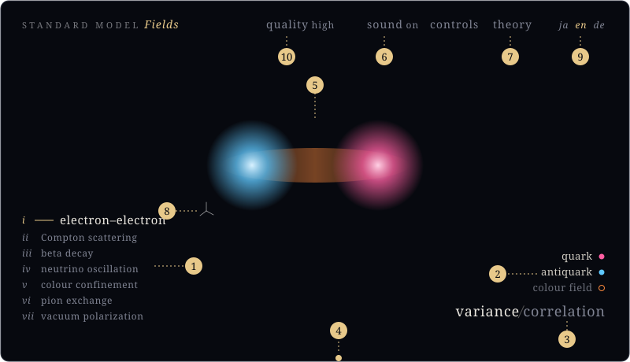
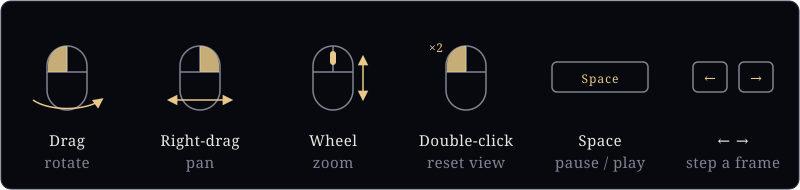

Controls
What can be operated on the view page
§Screen

- Choose a topic.
- Click the name of a field to show or hide it (the dot has the colour of the field). In correlation mode, the entry “… (assumed position)” shows or hides the chosen point.
- Switch between variance and correlation.
- Drag the line at the bottom edge to move in time.
- Drag on the screen or use the wheel to move the viewpoint (see the figure below).
- Sound on / off.
- To the theory page.
- Click the coordinate axes to return to the initial viewpoint.
- Language (ja Japanese, en English, de German). The theory and controls pages follow the same choice.
§Viewpoint and time

§When idle
The topics are played automatically one after another, each first in variance and then in correlation mode. Any operation stops the automatic playback; it resumes 45 seconds after the last operation.